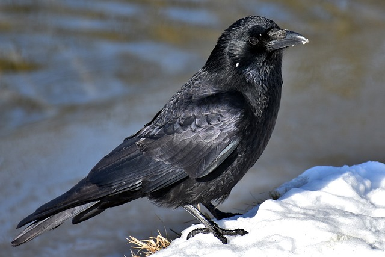

Raven
The Mysterious Raven: An Enigma of Intelligence and Folklore

picture of a raven
The Raven's Enigmatic Intelligence:
Ravens, the epitome of avian intelligence, captivate with their remarkable problem-solving abilities, tool usage, and intricate communication skills, showcasing their status as one of the most clever and adaptable creatures in the animal kingdom.“The term "raven" originally referred to the common raven (Corvus corax), the type species of the genus Corvus, which has a larger distribution than any other species of Corvus, ranging over much of the Northern Hemisphere.”
- wikipedia
Symbolism and Folklore:
1. Raven as the Harbinger of Mystery: Throughout history and across cultures, ravens have been intertwined with mysticism and symbolism, often associated with secrets, magic, and enigmatic messages, casting an aura of intrigue wherever they appear.2. Raven's Dual Nature: Revered as divine creatures in some cultures and feared as omens of misfortune in others, ravens embody duality, serving as messengers between the human and spirit realms, bridging the gap between the known and the mysterious.

The Life of a Raven:
1. Adaptability in All Terrains: Ravens' versatility enables them to thrive in diverse environments, from woodlands and mountains to urban landscapes, displaying their resourcefulness and ability to exploit various food sources.2. Complex Social Behaviors: Ravens form strong pair bonds, engage in playful activities, and exhibit aerial acrobatics, showcasing their highly developed social dynamics and their reliance on intricate communication within their flocks.
In conclusion, the raven stands as a symbol of intelligence, mystery, and adaptability, captivating human imagination for centuries. Its enigmatic nature, complex behaviors, and rich folklore make it an enduring icon of the natural world's secrets waiting to be unraveled.